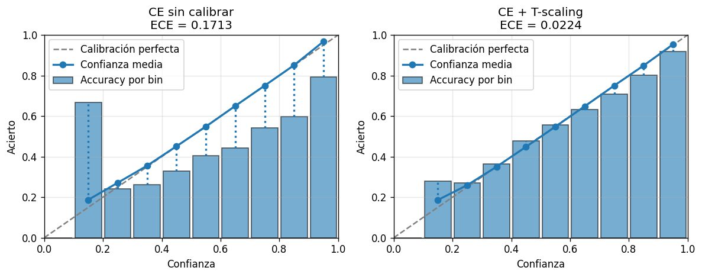
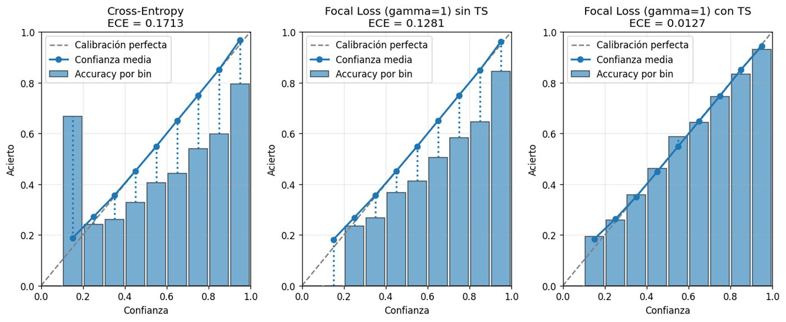

Calibración de redes neuronales
Si un modelo dice «90 % de confianza», debería acertar 9 de cada 10 veces. Una CNN que acierta no siempre sabe cuánto acierta. Mido ese desajuste con el ECE y los diagramas de fiabilidad, y comparo técnicas para corregirlo.
- Datos
- CIFAR-10 · Fashion-MNIST
- Técnicas
- Temperature scaling · focal loss · MC Dropout · aumento de datos
- ECE en test
- 0,032 → 0,004 (−86 %)
- Accuracy
- prácticamente igual (89,1 → 89,0 %)
Temperature scaling y focal loss
Sobre Fashion-MNIST entrené la misma CNN con distintas funciones de pérdida y comparé el resultado antes y después de calibrar en validación.
- Temperature scaling no cambia la accuracy, pero baja el ECE de 0,032 a 0,006. La temperatura óptima (1,33) indica que el modelo original estaba sobreconfiado.
- Focal loss con γ = 1 ya calibra mucho mejor que cross-entropy (0,007). Al subir γ, el ECE empeora rápidamente.
- La combinación de focal loss γ = 1 y temperature scaling logra el mejor ECE (0,004), con una accuracy ligeramente menor.

Desbalance, aumento de datos y MC Dropout
En una primera parte, sobre CIFAR-10, generé escenarios sin desbalance, con desbalance suave y con desbalance severo para ver cómo afectan a la calibración.
- El desbalance severo empeora a la vez la accuracy y la calibración, sobre todo en las clases minoritarias.
- El aumento de datos mitiga en parte la mala calibración, pero no la resuelve.
- MC Dropout no ayuda si el modelo ya está bien calibrado, pero sí reduce el ECE con desbalance severo.
La lección
Existe un compromiso entre calibración y accuracy: la configuración con menor ECE no siempre es la que más acierta. Para decidir con un modelo, importan las dos métricas.
Python · TensorFlow / Keras · NumPy · SciPy · Matplotlib
